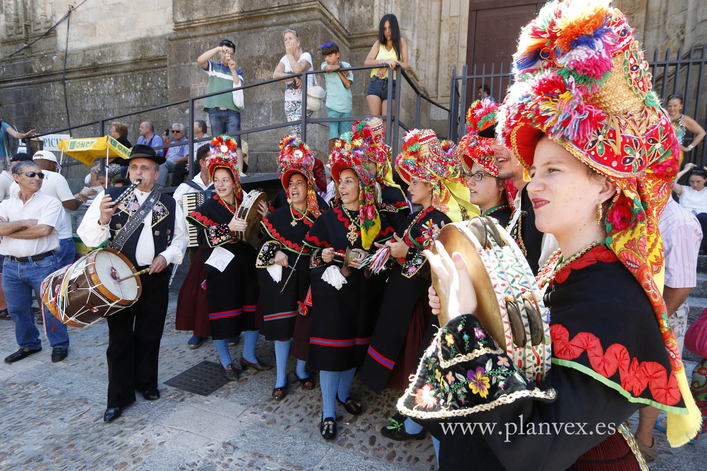

Tradiciones
Plasencia tiene varias tradiciones entre las que se encuentran:
- Martes Mayor. Declarada de Interés Turístico de Extremadura, tiene lugar durante el primer martes de agosto en la capital del Jerte desde hace más de cuarenta años, reúne en cada edición a más de 30.000 visitantes.
Agricultores, ganaderos, artesanos y comerciantes del área de influencia de Plasencia se dan cita desde primeras horas de la mañana del martes en las diversas plazas del recinto amurallado de la ciudad para presentar y ofrecer sus productos a los numerosos visitantes, cumpliendo con la tradición medieval de esta fiesta.
Así, cada Martes Mayor se convierte en la expresión festiva de los mercados de los martes, cuyos orígenes se remontan a finales del siglo XII coincidiendo con la fundación de la ciudad que, desde su nacimiento en 1186, estuvo muy ligada al comercio.
- Santa. Declarada Fiesta de Interés Turístico de Extremadura, representa una de las principales exposiciones de imaginería religiosa de Extremadura. Es una manifestación a caballo entre lo religioso y lo puramente artístico, que proporciona a los creyentes un motivo de reflexión, y a los demás la posibilidad, única, de ver las calles recorridas por unas imágenes que durante el año reposan en museos, iglesias y conventos.
Aúna devoción y fe desde la religiosidad popular, tradición, diversidad y colorido en todos los rincones de este municipio cacereño, donde esta maravilla que es la Semana Santa, supone uno de los mayores y más auténticos atractivos turísticos con la salida en procesión de once Cofradías y Hermandades Penitenciales.
- Feria de la Tapa. Durante el mes de octubre, tradicionalmente se celebra en Plasencia la Feria de la Tapa, un acontecimiento muy esperado y agradecido por los ciudadanos y turistas en el que se pueden degustar más de 100 tapas que compiten entre sí, para conseguir diversos galardones.
- Festival Internacional de Música Folk. A finales de agosto, todos los veranos se dan cita los mejores grupos de música folk en un entorno tan especial como es la Torre Lucía. Cada año con mayor afluencia de público, se ha convertido en uno de los festivales de referencia del país.
- Fulgencio. El 16 de enero, patrón de la ciudad.
- Romería al Santuario de la Virgen del Puerto. Domingo siguiente al de resurrección.
- Ferias y Fiestas. Segundo fin de semana de junio
